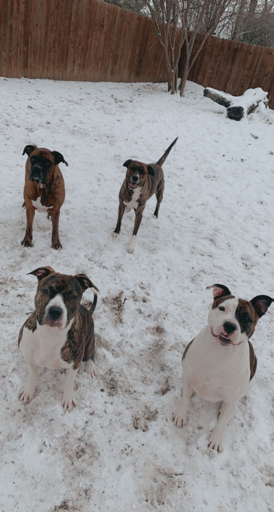
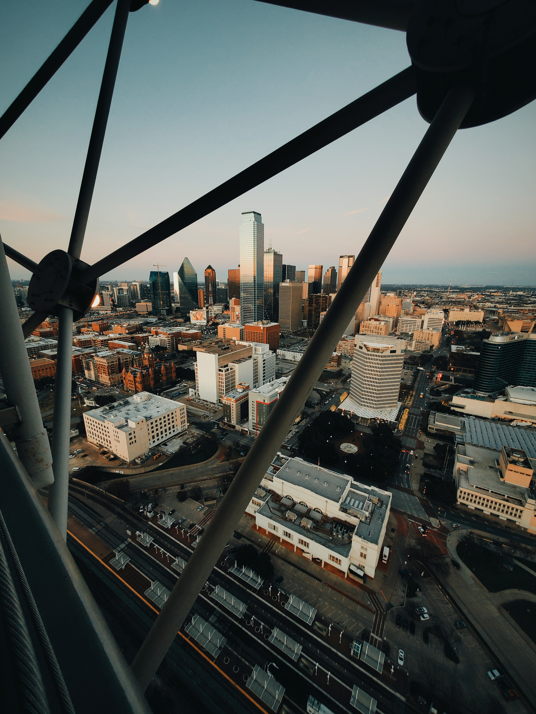
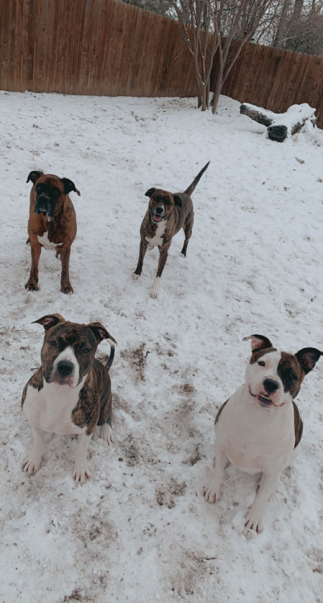
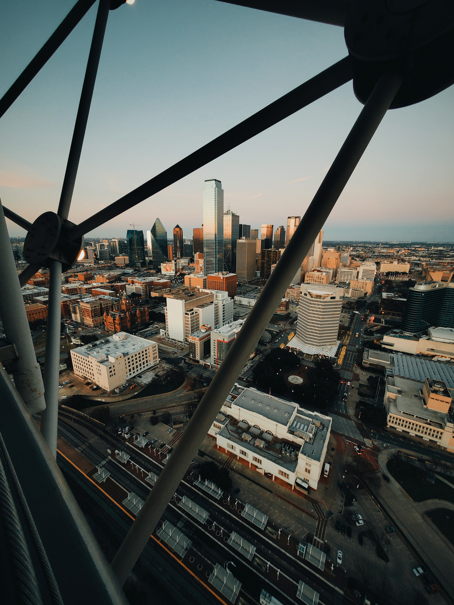

About Me
Hi, I'm Davonne!
Again, welcome to my Website! Here you will find out more about me and see some Projects I have been working on. First a little about me, I am originally from Denver, Colorado but have been living in Dallas, Texas for 10 years with my 4 dogs. I love Science, History, and Technology. I am on a coding journey, with the hope to land a job in the Tech Industry as a Full Stack Developer. I am available to work as a Freelancer, if you or any family or friends would like a Website. I have passion, creativity, vision, and come from a Management background having commuication and organization skills. I know together, we can build the website of your dreams.
 


